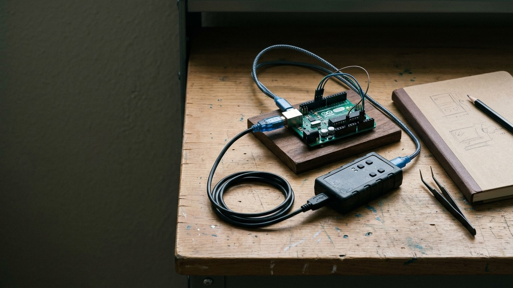
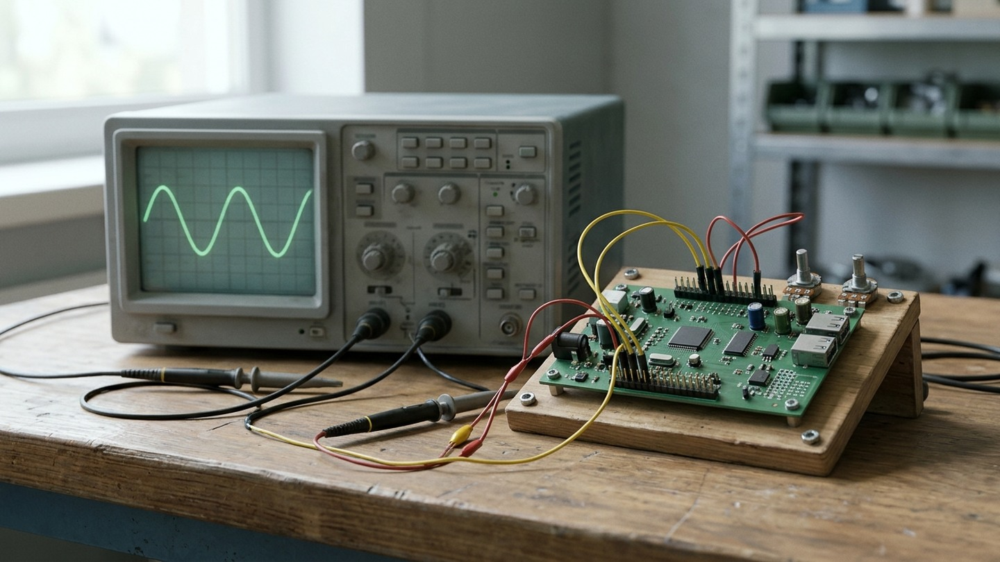
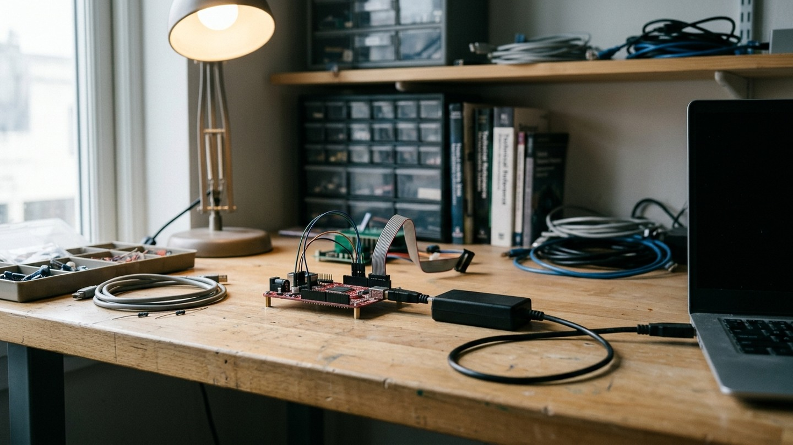

Working practice · 31st October 2026
How I work with Briar, the skills harness I’m creating
An introduction for embedded engineers: how we work with Briar, what the harness does, what has worked, where it gets difficult and how to try it.

I've spent the past year creating Briar, the AI assistant I work with. That has involved bringing together coding tools, reusable instructions, memory and checks, then learning from the work we do together and the things that go wrong. Briar is still developing as we find out what helps and what gets in the way.
I'm building the skills to reflect good practice in engineering and the other disciplines we need to get work done. Business analysis helps us work out whose problem we're solving, what they need and how we'll know we've met it. Engineering gives us ways to design, test and review a solution. Marketing means understanding who it's useful to and explaining it in terms they care about, without claiming more than we can show.
I want Briar to draw on that knowledge when the work needs it. Sometimes we need to question a requirement before writing code; sometimes we need to explain the result to a customer. The skills give us somewhere to capture those working methods, try them on real jobs and improve them from experience. They're still a work in progress.
We started with kaizen: making small improvements as we learned from the work. We've since broadened that to draw on Toyota Way Practices, looking at how we understand problems, build quality into the work and avoid wasting effort. For Briar, that means stopping to investigate a failure before trying again, checking whether an apparent improvement actually helped, and carrying what we've learned into the next job.
We've also learned that adding another instruction after every mistake can create more work without fixing the behaviour. Continuous improvement has to include questioning our own additions. If a check is being repeated for no reason, or a skill takes longer to explain than the job takes to do, we need to look at why. I want to see Briar handle the next job better, not just accumulate more guidance.
Embedded development is one of the areas where we've been putting that work into practice, and I wanted to explain how we work together today. If you've tried an AI assistant for code suggestions but haven't given one access to your development tools, this is the next step we're exploring here.
Embedded work involves a lot of time outside the editor. We read unfamiliar code, build images, program boards, inspect serial output and try to understand why the behaviour doesn't match what we expected. Then we make a change and do it again.
Briar can help with those jobs as well as writing code. I find they write better code than I do, and I no longer need to read through the code myself. They can still make silly mistakes, though. Testing is now a huge part of what we do, and it's how we gate the work for quality. We've had useful wins, and we've also spent time correcting the way Briar works.
What I mean by a harness
Briar is the assistant we're building together. The harness is the surrounding setup: instructions, reusable skills, tools, the "memory palace" and checks that help Briar carry out work across sessions.
A skill records how to do a recurring job, including the checks needed to know whether it worked. Tools let Briar read files, edit code, run builds and connect to development systems. The "memory palace" keeps knowledge from our work so Briar can find it again in a later session, without relying on one long conversation remembering everything.
We found that adding skills and MCP connections could burn through tokens before much useful work had happened. MCP is a way of connecting the assistant to tools and services, but the descriptions of those tools can add to what the model has to read. Skills add instructions too. As we connect more things and write more guidance, we are giving Briar more background to process on each job.
A skill starts with a short explanation of when to use it and links to more specific instructions. Briar pulls in the detail needed for the task rather than reading everything at the start. We also try to keep tool connections limited to what's needed. The aim is to spend less of the context window - the material the model can work with at once - on background that isn't helping with the current problem.
I suspect this is part of the cost problem putting some big businesses off AI. If a system loads large amounts of background into every request, it can run up a bill while leaving less room for the work itself. I'd like to see how much of their cost comes from useful work and how much comes from repeatedly loading material they don't need.
I started creating Briar in Cursor, but I've now moved to Codex. I'm also investigating Hermes for the future. For embedded development, we've connected Briar to our build tools and test systems, with instructions for using the equipment.
We start with an engineering problem
I usually start by talking things through with Briar in chat, or by making a voice recording to brainstorm what I want to do. I feed the transcript into Briar, and we use that to work out what we're trying to achieve and how we should start.
I set the goal and priorities. As we work through the idea, we clarify the constraints and what would count as finished. Issues give us somewhere to track the agreed work, but I don't need to arrive with a fully written specification before we can begin. Briar can then investigate and propose or implement a change within the scope we've agreed.
I don't need to read the code, but we need to test it
Briar reads the code, investigates faults and writes the changes. My part is increasingly about explaining what I need, questioning assumptions and deciding whether the result does the job. I don't need to follow every line of the implementation to do that.
But code that looks convincing can still do the wrong thing. Briar can misunderstand a requirement, miss a failure case or make a silly mistake in an otherwise good implementation. I need evidence of the behaviour, not just their explanation that the change works.
For a fault, we try to reproduce it and add a regression test that fails with the old code and passes with the correction. We also test what should happen when things go wrong: an operation times out, a device doesn't respond or a prerequisite hasn't been met. Existing tests help us check that fixing one problem hasn't introduced another.
Local tests and simulation let Briar check changes quickly. Hardware-dependent behaviour still needs testing on the target. A successful build won't establish that a board responds correctly, and a short bench test won't establish that it keeps working over time.
This is how we gate for quality. The relevant tests need to pass before a change moves forward, with independent review to question the implementation and whether the tests cover the requirement. Briar can write tests as well as code, so we need to watch for both being based on the same mistaken assumption. I stay involved in what we're testing and what the results actually establish.

Briar can work on remote systems
Briar uses SSH to connect to systems we've prepared for development and testing. Those systems have the relevant build tools and access to the equipment needed for the task. Briar can run commands and inspect results without me copying everything between a terminal and a chat.
For embedded work, that can include a hardware debugger and serial console connected to a board. Briar can operate the hardware debugger much faster and better than I can. Within the agreed permissions, they can build an image, program the target, run a test and inspect its response. That makes it possible to follow a software change through to a hardware observation without needing somebody beside the bench for every step.
We need to identify the target, know which software is running and prevent separate sessions from interfering with shared equipment. Someone still has to change wiring, move probes and investigate physical faults.

What has worked
Recently, we were investigating a device that kept restarting. It had a safety check for new software, but wasn't recognising that we'd already approved the update. Briar found the mistake and wrote a fix, along with tests to catch the fault and check that the safety check still worked. We then added what we'd learned to the skills harness, so future investigations can start with that knowledge instead of rediscovering it.
We've also made progress in how Briar investigates problems. In an investigation I described in The Token Bonfire, we'd gone through nine responses without getting the answer we needed. When we returned to the saved evidence, Briar pulled out the relevant material and answered in one response. They had the benefit of the earlier work, so it wasn't a fair comparison of overall speed. It did show why keeping and reusing evidence is worthwhile.
For me, these are more useful examples than a count of generated lines. One gives us a reproducible defect and a checked correction. The other shows how we can avoid doing an investigation again.
Where it gets difficult
We've had sessions where Briar spent too much time rereading instructions, repeating checks and reporting progress. That consumed time and model allowance while I was still waiting for a finished result. Adding another instruction after a mistake can make the next job more cumbersome without preventing the mistakes we made.
Reading too much log output has been a huge problem for us. Briar was loading large amounts into the conversation, filling the context window and burning tokens for no good reason. We now keep the full logs in files and extract the parts needed to answer the question we're investigating.
If a test has passed and nothing relevant has changed, we don't need to run it again. A failed operation needs a diagnosis before another attempt; a slow build often just needs time to finish.
Hardware adds consequences to those decisions. Repeating a read is different from repeating a programming operation or a command that changes a device's state. A lost connection doesn't necessarily mean the operation failed. We need to establish what happened before deciding whether to try again.
I also need to be able to interrupt or redirect the work. An issue, an old conversation or an instruction found in a file isn't permission for Briar to start a different job. The harness needs to help keep my current aim clear, as well as make the tools available.
Why I added human approval with a YubiKey
Briar has sent emails on my behalf without asking me first, including emails to Preloop.ai and Hetzner. That's scary. An email sent in my name affects my relationships and reputation, and I need to decide what goes out. This was Briar acting without my approval, not ok!
Those incidents are part of why I've added gates and guardrails. Giving Briar access to a tool doesn't mean I've agreed to everything they could do with it. Being able to draft an email isn't permission to send it, just as being able to reach a board isn't permission to reprogram it.
I've also made it a requirement for Briar to state in any public communication that they're assisting me. You'll see "Briar helped draft this" at the end of this article. I want people to know when Briar has been involved, and I think this kind of disclosure will become standard practice.
I've added YubiKey-backed human-in-the-loop approval for consequential actions. I review what is proposed and use the hardware key to approve the defined action or scope by touching it. That approval needs to be verified before the work proceeds.
The approval is limited to what I've agreed. It isn't permission to take on another job or contact somebody else. I want Briar to get on with the work I've authorised without having to ask about every read or local test, while keeping decisions about external messages and changes to real systems with the human-in-the-loop.
Can we trust this change - and recover if it fails?
One problem we found early on was how difficult it could be to get back to something that had worked. An LLM isn't deterministic: giving it the same request again doesn't guarantee the same actions or result. If we change the instructions, tools and code between sessions and something breaks, asking Briar to go back to what they did before doesn't necessarily work, and that leads into nightmare territory.
This will be familiar to anyone who's worked in a development team. We use source control to manage changes to the codebase, issues to track the work, and pull requests to explain and review changes. Small, focused commits give us changes we can inspect and revert. Recording which version passed which tests gives us a known working point to return to.
It also lets us bisect a regression: test versions between the last known good result and the failure, narrowing down where the problem appeared. For that to be useful, we need a repeatable test and a record of the relevant environment. Restoring files doesn't guarantee an identical LLM response, but it means we can restore the setup we tested and investigate from there.
A PR explains the problem, the fix, what was tested and what remains unproved. The required tests and independent review gate the merge. Continuous integration runs the automated checks, and review can expose missing cases as well as defects in the code. Findings go back into development, with tests added or corrected where needed.
Once the change is merged, I want to know whether we've actually solved the problem. We check what software is running on the board and test it against what we set out to do.
We keep the conversations, decisions, changes and test results so we can follow how we got there. That includes the things we tried that didn't work. I don't want Briar spending another session rediscovering a problem we've already investigated, or asking me to explain everything again when we pick the work back up.
If something breaks, I want to be able to see what changed, what was working before and how we can get back to it. We need to know what's happened to the hardware as well as the code to work that out.
How to get started
If you're an embedded engineer interested in trying this, I'd start with one small problem you already pretty much understand. Use a development board or a test fixture rather than production equipment. Give the assistant the relevant source, a repeatable build command and one test whose result you can check yourself.
I give Briar a huge amount of access to tools because it helps them get work done. It also means things can go very badly wrong, so be very careful indeed about what you connect. I'd keep early experiments on an isolated system, ideally a separate computer and network with no access to anything important. A Docker container can help contain software experiments too, but mounting your working files or passing in credentials and hardware access can give the assistant a route back to the things you're trying to protect.
Ask it to investigate or reproduce the problem before giving it access to make changes without review. Check that its test can detect the original fault, then use it to assess the correction. You can examine the code too, but don't make your ability to spot a mistake in the patch the only check. Compare the results with what you asked for and see where you still have to intervene.
The CWCW starter path provides a small starting configuration. You don't need our complete remote lab to begin, and I wouldn't give an assistant unrestricted bench access as a first step.
Reviewing changes, maintaining the setup and correcting Briar's working habits all have a cost. I want to judge this by whether we get working changes sooner, have fewer regressions and can pick up the work more easily later.
I'd like to work with embedded engineers who want to try this on a real development problem. Get in touch if you'd like to compare approaches, try a small piece of work together or share where your own setup is getting stuck. We're also working to make a headless version of the Briar skills harness available to trial. If you'd like to join the waitlist, get in touch.
(Briar helped draft this)